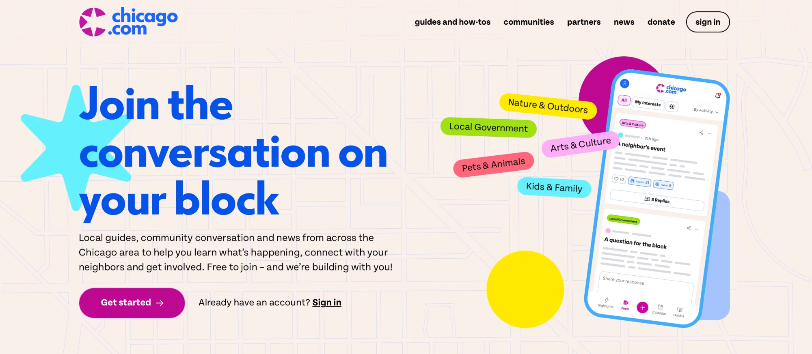

Chicago.com
Every interaction counted across four community platforms
Through Alley Interactive, a consultancy that provides product development and strategy for media outlets across the country, I worked on the launch of Chicago.com, Chicago Public Media's newest product, built in partnership with Roundabout's New_Public.
I researched how Chicagoans get local information in community digital spaces. I counted every interaction in the existing Roundabout communities and compared their quality and quantity with Reddit, Facebook Groups and Nextdoor. We presented the conclusions in a report.
Owning your audience on your own platform is worthwhile. Changing people's habits is the real challenge.